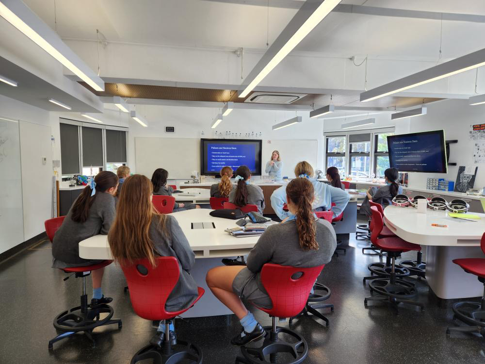

I am a PhD Candidate at Monash University researching pulsar timing and multimessenger astronomy. I am a member of OzGrav, the LIGO Scientific Collaboration, and the Parkes Pulsar Timing Array (PPTA). Outside of my research, I love doing public outreach and inspiring others to pursue STEM.

Nathan, R. S., Miles, M. T., Ashton, G., Lasky, P. D., Thrane, E., Reardon, D. J., ... & Cameron, A. D. (2023). Improving pulsar-timing solutions through dynamic pulse fitting. Monthly Notices of the Royal Astronomical Society, 523(3), 4405-4412.
Reardon, D. J., Zic, A., Shannon, R. M., Di Marco, V., Hobbs, G. B., Kapur, A., ... & Zhu, X. J. (2023). The gravitational-wave background null hypothesis: Characterizing noise in millisecond pulsar arrival times with the Parkes Pulsar Timing Array. The Astrophysical Journal Letters, 951(1), L7.
Reardon, D. J., Zic, A., Shannon, R. M., Hobbs, G. B., Bailes, M., Di Marco, V., ... & Zhu, X. J. (2023). Search for an isotropic gravitational-wave background with the Parkes Pulsar Timing Array. The Astrophysical Journal Letters, 951(1), L6.
Zic, A., Reardon, D. J., Kapur, A., Hobbs, G., Mandow, R., Curyło, M., ... & Zhu, X. J. (2023). The Parkes Pulsar Timing Array Third Data Release. Publications of the Astronomical Society of Australia, 40, e049.
Sarin, N., Lasky, P. D., & Nathan, R. S. (2023). Missed opportunities: GRB 211211A and the case for continual gravitational-wave coverage with a single observatory. Monthly Notices of the Royal Astronomical Society, 518(4), 5483-5489.
Ashton, G., Lasky, P. D., Nathan, R., & Palfreyman, J. (2020). Flickering of the Vela pulsar during its 2016 glitch. arXiv preprint arXiv:2011.07927.
Ackley, K., Adya, V. B., Agrawal, P., Altin, P., Ashton, G., Bailes, M., ... & Ward, K. (2020). Neutron Star Extreme Matter Observatory: A kilohertz-band gravitational-wave detector in the global network. Publications of the Astronomical Society of Australia, 37, e047.
created with
Website Builder Software .